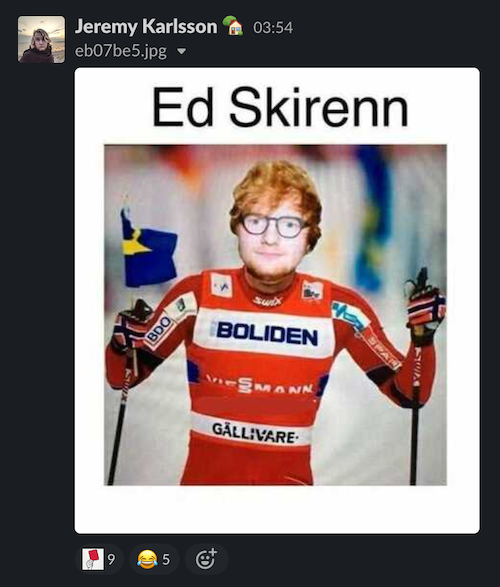
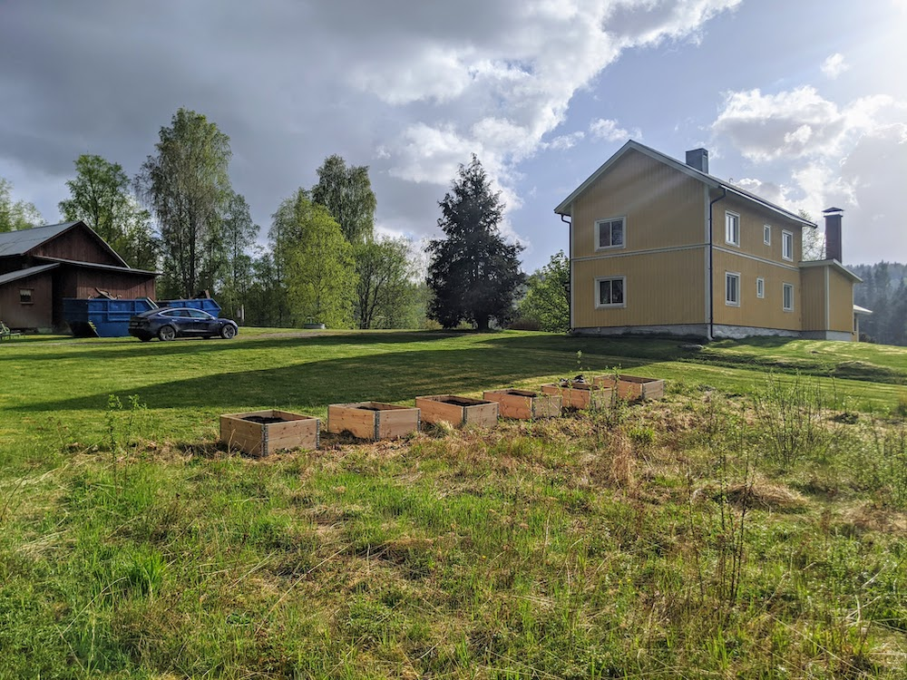

Hej Julia
Jag ansöker härmed - väldigt seriöst - om rollen som både vän och/eller framtida livspartner. Det blir ju säkert kul vad än det slutar i!
Dra igenom alla slides, så får du veta vad jag är för filur.
Jag ansöker härmed - väldigt seriöst - om rollen som både vän och/eller framtida livspartner. Det blir ju säkert kul vad än det slutar i!
Dra igenom alla slides, så får du veta vad jag är för filur.
Rolig är det sista folk INTE beskriver mig som. Jag nuddar inte vid någon människas liv utan att lämna leenden. På jobbet är jag inte snål med att sprida gläde i vår chatt!
Jag gillar att spendera mycket tid i skogen. Så till den mildra grad att jag köpte hus i Glaskogens naturrervat. Illustrerad som bakgrundsbild är utsikten över sjön ca 1 km från mitt blivande hus. Så när jag inte är aktiv med att hajka i skogen så kommer jag ha mycket arbete på gården att leka med. Måla utvändigt och invändigt. Inreda och odla grönsaker...
Du är väl säker nyfiken på hur huset ser ut också? Här är det. Och min odling i förgrunden!
I övrigt gillar jag musik - spelar några instrument, och har pluggat musik.
Är duktig på att laga mat och att skriva poesi.
Här är det inte mycket historik att tala om vad det gäller kärlek. Det har mest gått åt fan, men jag tror har vad som krävs!
...häng med på en skogspromenad så kan vi lära känna varandra på riktigt. Så har du chansen att upptäcka allt den här poetiskt roliga och naturälskande jössehäringen har att erbjuda!
Kram,